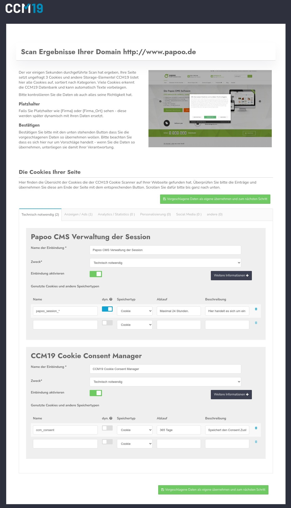
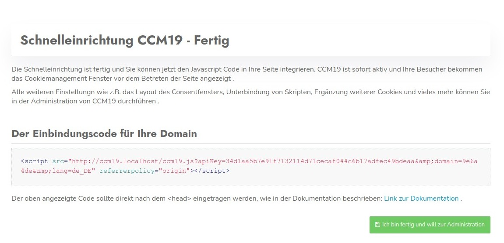

Direkt nach dem 1. Aufruf in der Administration werden Sie durch das sogenannte Onboarding geführt. In diesem Prozess werden die wichtigsten Punkte Ihrer Seite abgefragt, gescannt und verarbeitet. Sie können hier bei jedem Schritt korrigierend eingreifen.
Alles was im Onboarding erstellt wird können Sie später in der Administration wieder anpassen und ändern.
Falls das Onboarding nicht automatisch startet können Sie auf dem Dashboard einfach den folgenden Link klicken:
Nach dem ersten Login erscheint die folgende Maske - hier können Sie Ihre Domain eintragen und nach Cookies und Skripten scannen lassen. Wichtig ist dass Sie den Sicherheitshinweis abhaken.

Natürlich können Sie auch alles manuell durchführen, klicken Sie dafür einfach auf den Link "Setup überspriungen - ich mache alles manuell".
In diesem Schritt werden die Ergebnisse des automatischen Scans Ihrer Seite dargestellt. Hier können Sie die Daten übernehmen und anpassen. Für jeden gefundenen Anbieter resp. Einbettung wird ein Eintrag erstellt.
Zu jedem dieser Einträge werden die jeweils verwendeten Cookies und Storage Elemente aufgelistet.
Für jeden Eintrag können Sie hier die rechtlich notwendigen Texte ergänzen und anpassen.
Im Hintergrund läuft eine Datenbank von CCM19 die abgefragt wird anhand der verwendeten Cookies und Storage Elemente.
Weiterhin wird ein Screenshot der Seite erstellt für Ihrer Kontrolle dass auch tatsächlich die korrekte Seite gescannt wurde.

Die Ergebnisse teilen sich in die 5 Standard Kategorien auf in die Skripte, Cookies und Storage Elemente normalerweise zugeordnet werden.
Hinter jedem Eintrag steht wie viele Einträge in der jeweiligen Kategorie gefunden wurden und automatisch zu sortiert werden konnten.
Für alle nach dem dafürhalten von CCM19 notwendigen Angaben werden Eingabefelder bereit gestellt.
Der Name der Einbindung - das kann z.B. Google Analytics sein oder Facebook Pixel. Hier sollten Sie einen aussagekräftigen Namen nutzen.
Hier tauchen wieder die schon oben genannten Kategorien auf. Sie können damit jeden Eintrag jeder beliebigen Kategorie zuweisen. Beachten Sie bitte aber dass Sie die rechtlichen Rahmenbedingungen beachten. Facebook Pixel z.B. wird sicher kaum unter technisch notwendig korrekt einsortiert sein.
Hiermit aktivieren Sie den Eintrag, so dass er auch im Frontend abgehakt werden kann
Hier können Sie Skripte die im Quelltext Ihrer Seite eingebunden sind durch CCM19 blockieren. Nutzen Sie z.B. Google Analytics:
<!-- Global site tag (gtag.js) - Google Analytics -->
<script async src="https://www.googletagmanager.com/gtag/js?id=UA-123456789-1"></script>
<script>
window.dataLayer = window.dataLayer || [];
function gtag(){dataLayer.push(arguments);}
gtag('js', new Date());
gtag('config', 'UA-123456789-2');
</script>Dann tragen Sie in dem Feld z.B. "googletagmanager.com" ein - damit wird dann auf Ihrer Seite jedes Javascript geblockt dass diese Zeichen (String) enthält und das Skript wird nicht ausgeführt solange kein Consent gegeben wurde.
Auf diese Weise müssen Sie nicht zwingend Ihre Seite umbauen.
Der Anbieter - hier muss der Firmenname des Anbieters rein der das Skript anbietet. In unserem Fall wäre es Google Ireland Limited. Tragen Sie hier auch gerne direkt die komplette Adresse des Unternehmens ein.
Bei der Beschreibung tragen Sie die Aufgabe der Einbindung ein. Wieso wird diese gesetzt? Was macht diese Einbindung?
Hier gehört der Link zu den Datenschutzbestimmungen des Anbieters hinein. Diesen finden Sie in der Regel wenn Sie auf die Webseite des Anbieters gehen.
Welche Daten werden ganz genau gesammelt? Nur die IP? Oder auch Klickdaten, Daten des Browsers, Logins, Verhalten uvm? Informieren Sie sich genau bei dem Anbieter des Skriptes und tragen Sie möglichst genau ein was mit den Daten passiert. Nur so ist eine informierte Einwilligung Ihrer Besucher möglich.
Warum sammeln Sie diese Daten? Was wollen Sie damit machen? Conversionoptimierung? Nutzererfahrung verbessern? Oder nur eine Warenkorb Funktion realisieren?
Hier definieren Sie die rechtliche Grundlage aufgrund dessen Sie diese Einbindung vornehmen wollen. Bei Tracking Skripten greift in der Regel nur "Einwilligung, Art. 6 Abs. 1 lit. a DSGVO" - Einwilligung des Besuchers durch eine informierte Entscheidung. Also rein freiwillig.
Wo werden die Daten verarbeitet. Hier gilt nicht nur die die Adresse Ihres Büros sondern auch wo steht der Server? Berücksichtigen Sie bitte auch das Sie derzeit keine Daten in unsichere Drittländern übertragen dürfen. Anbieter die Daten in die USA exportieren sind derzeit rechtlich vermutlich nicht möglich (Stand 29.09.2020).
Hier sind alle Cookies und Storage Elemente aufgelistet die das Skript setzt. Sie können von Hand noch weitere Elemente eintragen, da der automatische Scan nicht immer alle Daten finden kann. Z.B. kann der Scanner keine Daten finden für einen eingeloggten Zustand.
Die Bezeichnung im Browser - z.B. _ga für ein Google Analytics Cookie
Hiermit bestimmen Sie ob es eine dynamische Variable ist - z.b. werden mit _g* alle Cookies geblockt die mit _g anfangen, also _ga, _gid usw.
Wie werden die Daten in Ihrem Browser gespeichert.
Wann läuft der Speichereintrag automatisch aus.
Welchen Wert transportiert das Cookie - in der Regel sind es kryptische Daten die hier gespeichert werden.
Wenn Sie alle Daten überprüft und notwendige Anpassungen durchgeführt haben, klicken Sie auf den Button unter dem Formular um die Daten in die CCM19 Administration zu übernehmen - siehe Screenshot.
.jpg)
Im Schritt 3 tragen Sie die LInks zu Ihrem Impressum und Ihrer Datenschutzbestimmungen ein. Diese Daten können Sie später in der Administration jederzeit ändern.
Da das System die Seite kennt und im vorherigen Schritt gescannt hat, versucht es ebenfalls die Links zum Impressum und zu den Datenschutzbestimmungen automatisch auszulesen und diese im Formular vorzubelegen wie im nächsten Screenshot zu sehen ist.

Bitte passen Sie die Daten falls nötig an, so dass die korrekten Links dort drin stehen. Klicken Sie dann auf den grünen Button um zum nächsten Schritt zu kommen.
Hier definieren Sie die Platzhalter Texte für Ihre Seite - die wichtigsten sind folgende die Sie auch in dem Screenshot unten sehen:
Wenn Sie die Daten eingetragen haben, klicken Sie auf den unten stehenden grünen Button. Da das System den Link zum Impressum kennt, versucht es die notwendigen Daten aus der Seite auszulesen, bitte korrigieren Sie diese wenn nötig.

Auf der letzten Seite des Onboardings finden Sie den Einbettungscode des CCM19 für Ihre Webseite. Den müssen Sie sich hier nicht merken - er wird genauso auch im Dashboard der Administration auch immer angezeigt. Sie können ihn aber natürlich direkt kopieren und in Ihre Seite einbinden.

Der Einbindungscode kann z.B. so aussehen.
<script src="http://localhost/ccm19/cookie-consent-management/www/public/ccm19.js?apiKey=1234&domain=1234&lang=de_DE"
referrerpolicy="origin">
</script>Diesen Code kopieren Sie und binden in auf Ihrer Seite möglichst weit oben im Kopf der Seite ein, am besten direkt nach dem ersten
Element<html>
<head>
<script src="http://CCM19ServerUrl/ccm19.js?apiKey=1234&domain=1234"
referrerpolicy="origin"></script>
</head>
<body>
</body>
<html> Wenn Sie fertig sind, klicken Sie auf den blauen Button und springen damit zurück in die CCM19 Administration.